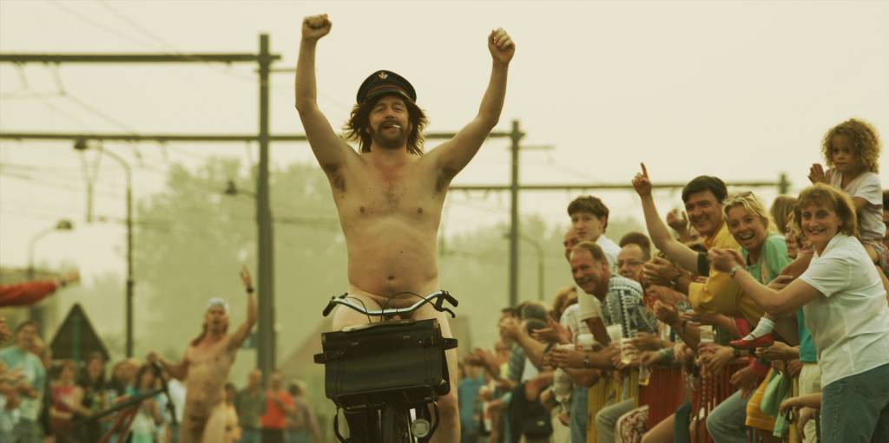

2009 | Felix Van Groeningen
DE HELAASHEID DER DINGEN
1988. Gunther Strobbe (13) woont samen met zijn vader Celle en zijn drie nonkels Breejen, Koen en Petrol bij zijn Meetje. De vier broers zijn na een reeks mislukte huwelijken teruggekeerd bij hun moeder. Het mannengezin leeft er in het smerigste kot van Reetveerdegem onder het motto “God schiep de dag en wij nietsnutten ons er doorheen”. Het bezoek van Gunthers tante, Rosie, en haar dochter, nichtje Sylvie, biedt een welgekomen afwisseling. Voor Gunther zijn Rosie en Sylvie het levende bewijs dat er ook een andere wereld bestaat…
Cast: Valentijn Dhaenens, Koen De Graeve, Johan Heldenbergh